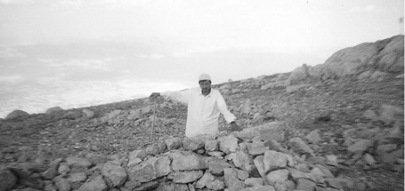
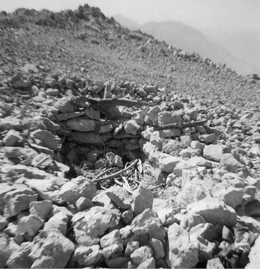
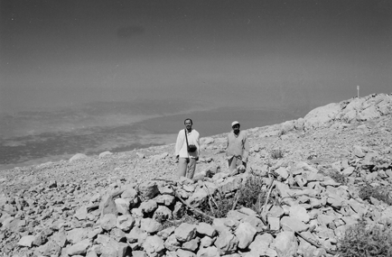
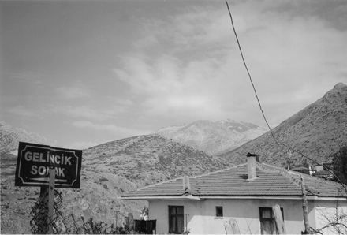

Gönüllerdeki Barla
Barla’da Bir Misafir
Bahar başlamak üzere idi. Havaya, suya cemre düşmüş, sıra toprağa gelmişti. Toprak yağmur bekliyordu. Toprak rahmet bekliyordu. Semada yer yer rahmet bulutları toplanmaya başlamıştı. Gökyüzünün gözlerinden dökülen damlalar toprak anayı güldürecekti. Barla’nın “aziz misafir”i de baharla birlikte güller beldesine teşrif etmek üzereydi.
Yeşillikler içindeki Barla iskelesine bir yelkenli kayık yaklaşır. Yelkenlide bir jandarmadan başka dört kişi daha vardır. Yolcular kayıktan inerken sahildeki keklikler havalanmaktadır. Jandarma elli yaşlarındaki, fakat çok daha genç ve dinç görünen “misafir”in koluna girmiş, beraberce yavaş yavaş bayır çıkmaktadır. Bu, yalnız ve garip “misafir”in sepeti ile bohçasını iskeledeki korucunun merkebine yüklemişlerdir. Elinde sadece bir Kur’ân-ı Kerîm ile bir seccadesi vardır. Korucu, havalanan kekliklere ateş etmek istemiştir. Fakat o şefkatiyle, sevgisiyle kâinatı kucaklayan garip “misafir” buna mani olur.
“Kardaşım! Mevsim bahar, bu hayvanların yumurtlama zamanıdır. İstersen gel ilişme, bu hayvanlara yazıktır.” der.
Gözünü kırpmadan yavrulu yavrusuz masum hayvancıkları avlayan korucu şaşırmış, donup kalmıştır.
“Kardaşım!” hitabı şimdiye kadar duyduğu ses ve hitaplara benzemiyordur. Bu seste şefkat vardır, bu seste merhamet vardır ve bu seste âhenk ve tatlı bir edâ vardır.
Barla’nın gül bahçelerinin arasından geçip giderken keklikler havadan adeta onlara eşlik etmektedir. Güller henüz tomurcuk halinde, bülbüller ise gelmemiştir. O yıl Barla yaylasında o zamana kadar görülmemiş bir kış hüküm sürmüştür. Kar, tipi, bora ve fırtına yeni ve taze fidanları değil asırlık çınarları bile sarsıyordu. Sanki yerinden oynatıp söküp atmak istiyor gibiydi. Fakat âsi insanın keyfini kâinata mühendis yapmayan Ezelî Kudret, her kıştan sonra bir bahar, her geceden sonra bir nehar getirecekti. Artık şiddetli geçen kış bitmiş, nevbaharın tebessümü ile Barla bahçelerinin gülleri yapraklanmış, bülbülü çağırmaya başlamıştır!
Küçük nahiyenin “Büyük Misafir”ini ilk gece Ak Mescid’in yanındaki karakolda ağırlamışlardır. Bu aziz misafiri, ertesi sabah nahiyenin eşrafından Muhacir Hâfız misafir eder. Üstad’a Muhacir Hâfız sinesini açmış, mihmandar olmuştur.
Misafirliğin ilk günleri idi. Üstad, yanlız başına dağlara gidiyordu. Birçok büyüklere mesken olan, mekân olan, makam olan başı dumanlı dağlar binicisini bulan küheylan gibi canlanmış, şenlenmişti. Üstadlara üstad olan garip “misafir”, Barla yaylasından, Gelincik tepesinden, Çam Dağları’ndan insanlığa dersini vermeye başlamıştı bile… Minberdeki hatip gibi, kürsüdeki profesör gibi tarihin sînesindeki Akşemseddinler gibi...
Bu aziz misafir, dâvâsına o kadar inanmış, kendinden o kadar emindi ki, engin bir teslimiyet, derin bir tevazu ve tevekkül içinde idi. Kendini yokluğa bürümüştü: “Ben yokum, benim kudret ve ehliyetim de yoktur.” diyor, böyle dedikçe “var” oluyordu. Yokluk içinde sonsuz ve tükenmez bir servete sahip olmuştu. İnanmış gönüllerde, mü’min sînelerde, manevî taht ve saltanat kurmuştu. Denize atılan taş gibi dalga dalga, halka halka büyüyor, genişliyordu.
Gündüzleri kırlarda, bayırlarda bahar ve yaz yağmurlarında şemsiye altında, geceleri ise gaz lambasının sönük ve isli ışığında yazıyor, bazen de yazdırıyordu. Yazanlara para veriyordu. Kudret ve dehâsını mürekkep veya sabit kalemle kâğıt üzerine aktarıyordu. Kâğıt bulmak da bir problem idi. Bazen kese kâğıtlarına, bazen ilkokul çocuklarının renkli elişi kâğıtlarının beyaz yüzüne yazıyordu. Elindeki sabit kalem, rengarenk çiçekler gibi, bahar yağmurundan sonra semâyı kuşatan gökkuşağı gibi renkler açar, kırmızı, mavi, sarı, yeşil kavisler halinde kâğıt üzerinden ebediyetlere akıp giderdi. Kara kıştan sonra gelen bahar gibi, Barla bağlarının köşklerinden dökülen siyah mürekkepler al al güller hâlinde hakikat çiçekleri açıyor, Nur ve Gül fabrikasının kâtiplerini sonsuz bir şevk ve sevince boğuyordu.
Kâtipler, müsvedde kâtipleri, tebyiz kâtipleri, geceleri gündüzlere, gündüzleri gecelere katarak yazıyordu. Dizüstü kıbleye doğrulur, alın damarları kabarır, ak ve pâk alnı gökteki hâle gibi bulutlara karışırdı. Göklerin, bulutların sahibi olan Allah, tevfikini ona yâr etmişti. “Yâ Rab! Güldür Said’i, tâ gülmesinden güller açılsın!” diyen dillerin dualarını reddetmemiş, kabul buyurmuştu. Gül şehrinin gülleri gonca gonca önce Anadolu’yu, sonra da dünyamızı ıtrı ile muattar eylemişti.
Barla Sıddıkları
O gün bardaktan boşanırcasına yağmur yağmıştı. Öğleden sonra başlayan bu yağmur, ikindiye kadar devam etmişti. Gök gürlüyor, şimşekler arka arkaya çakıyordu. Nihayet öfkesi geçen gökyüzü sakinleşmiş, ekşi fakat merhametli yüzü, güneşin çıkmasıyla yeniden tebessüme başlamıştı. Yağan rahmeti müteakip etrafı tatlı bir toprak kokusu kaplamıştı. Ağaçlar, yapraklar ve çiçekler yıkanmış; pırıl pırıl parlıyordu. Barla dağları rahmete hasret kalmış, Barla bağları rahmete susamıştı. Suya hasret, rahmete hasret, yağmura hasret Barla toprağı, emdikçe emmişti rahmeti. Sînesi uzun zamanın susuzluğu ile öyle teşne idi ki hiç dinmesin bu rahmet diyordu. Bu bol rahmetten sonra, Eğridir Gölü’nün ufkundan yükselen gökkuşağı semâyı sarmıştı. Kırmızı, mavi, yeşil ve sarı rengârenk... Bir ressamın fırçasından çıkan tablodan daha sanatlı, daha renkli ve daha ahenkli idi. Evlerinden sokağa fırlayan köy çocukları, ellerini çırparak sevinç içinde “Yeşili benim... Yeşili benim!” diye yeşile sahip çıkıyorlardı. Hiçbirisi yeşilden gayrisine razı olmuyordu. Çocuk kalbi, yeşilde hayat, yeşilde saadet olduğunu hissediyordu. Bu esnada karşı tepelerden “Hey! Hey!” diye çoban sesleri geliyordu. Dağlardan tepelerden yuvarlanarak inen keçilere mukabil ‘koyunlar, kuzular meleyerek ağır ağır yollarına devam ediyordu. Nisan yağmurları olduğu gibi üzerlerine boşanmıştı. Koyunlar, kuzular, keçiler sırılsıklam olmuştu. Sürünün etrafında bir arslan edası içinde dolaşan muhâfız köpekler de o günkü rahmetten hisselerini almıştı. Sürüdeki hayvanlar birer ikişer ağıllarına dağılırken, tâ karşıki tepeden bir zât gözüktü. Ağır ağır tepeden dereye doğru iniyordu. Hâlinden ve istikametinden anlaşılan biraz uzaktan geliyor olmalıydı. Evet... Koca Pınar’dan geliyordu. Koca Pınar; suyu bol, etrafı yemyeşil bağ ve bahçelerle çevrili serin, koyu gölgeli bir mevkî idi. Sabahın erken saatlerinde Üstad, o taraflara giderdi. Elinde küçük bir sepeti vardı. Sepette bir demlik, bir-iki çay bardağı, bir parça ekmek, peynir, kâğıt, kalem, mürekkep ve Kur’ân-ı Kerim...
Rahmetin bol olduğu bu günde, Koca Pınar’da İlâhî Rahmet Koca Üstad’da bol bol tecellî etmişti. Billur pınarlardan boşanan sular, semadan boşanan rahmet ve sonsuz rahmetin altında Barla’nın ve Barlalıların Aziz Misafiri, şemsiyesinin altında yazıyordu. Resûl-ü Ekrem’in (s.a.s.) mu’cizelerini yazıyordu. Kaleminden çıkan mânâlar rahmet gibi çağlıyordu. Gürül gürül şelâleler gibi akıyordu. Bir milletin var oluş veya yok oluş dâvâsında, büyük yükün hâmili Bediüzzaman, tezgâhını almış ilmek ilmek rahmet altında eşya ve mâsivâdan fütursuz dâvasını destanlaştırıyordu.
Yağmur dinince o da yola çıkmış, yavaş yavaş evine dönüyordu. Yollar çamurdu, yollar taştı, yollar inişli-çıkışlı idi. Fakat ondaki azim, ondaki irade, düşmanlarını bile hayran bırakmıştı. O, yoklukta varlığı, zahmette rahmeti, musibette saadeti bulmuştu. “Musîbetlerin artması mûsikînin nağmeleri gibi geliyor bana.” diyordu.
Dereye inmiş, karşı tepeye çıkıyordu. Çamurdan yürünemeyecek hâlde olan incecik keçi yolları ve bu yollardaki taşlar, ayağındaki lâstikleri parçalamıştı. Giyilmeyecek hâle gelen ayağındaki lastiğinin bir tekini eline almış, beyaz yün çorabı çamurlar içinde yoluna devam ediyordu. Evlerin arasındaki dar ve dik yokuştan nihayet büyük çınarın yanındaki hanesine yaklaşmıştı. Yokuşbaşı mahallesinin sakinleri yol kenarına oturmuş, ikindi sohbeti yapıyorlardı. Barla yaylasının garip misafiri, mahalle sakinlerine selam vererek yoluna devam etti. Köylüler arkasından bakakaldılar. Kimi acıdı, kimi üzüldü, kimileri de sadece “aman sen de” gibilerden dudak büktü. İçlerinden kısa boylu, kara kaşlı, kara gözlü, mütevazı birisinin hâli daha başka idi. Gözleri buğulanmış dolu dolu olmuştu. Hocanın hali O’na çok dokunmuştu. Mutlaka yardımına koşmak istiyordu; ne olursa olsun! İster jandarma, ister müdür, kim görürse görsün, kim ne derse desin, bu garip ve ihtiyar misafirin yardımına koşması lâzımdı. Zihninde dolaşan bütün istifhamlara rağmen yerinden kalkarak Hocaefendi’nin peşinden koştu. Çeşmeye yaklaşan, zamanın garibi bir an durdu ve arkasına dönerek kendisine doğru gelmekte olan zata, “Gel kardaşım gel!” diye seslendi. Koşarak Hoca’nın elinden çamurlar içindeki yırtık lastiği aldı ve çeşmenin bol sularında iyice yıkadı. Sonra da beyaz yün çorabı tertemiz yıkadı ve oradaki ipe kuruması için astı.
Bu civanmert ve âlicenap zat, Barla Sıddıklarından Sıddık Süleyman Kervancı idi. O’nun Bediüzzaman’ın hizmetine girmesi, işte bu 1927 baharının yağmurlu bir gününde olmuştu.
Gelincik Dağı’na Baktım
Takvim yaprakları, 1927’nin Mart ayının ilk salı gününü gösteriyordu. Mübarek Şaban ayının sonları gelmiş, ramazan ayına üç gün kalmıştı. Baharın kokuları esmeye başlamıştı. Aziz Barla’ya Jandarma Şevket’in nezaretinde aziz bir Üstad teşrif ediyordu. Jandarma bu büyük şahsiyeti, Ak Mescid’in yanındaki Ak Karakola teslim ediyordu. Bir gecelik Ak Mescid’de kalan Üstad, buradan, nahiyenin eşrafından ve hocalarından Muhacir Hâfız Ahmet Karaca’nın misafirhanesine gelmişti. Yokuşbaşı mescidinin imamı Muhacir Hâfız, bu büyük misafirini, büyük hürmetlerle karşılamıştı. Geceleri, bu zâtın, sabahlara kadar devam eden ibadetini, niyaz ve münacatlarını haşyet ve hayranlıkla takip etmişti. Muhacir Hâfız o günden sonra hanımına
“Hanım, başımıza çok büyük bir devlet kuşu kondu. Sakın bu zâtı gücendirmeyelim. Eğer bu zât, buradan bize gücenerek giderse, bizim hâlimiz haraptır!” diyecektir.
Bütün Barla’nın mümtaz insanları, hanedan aileleri, Üstad Bediüzzaman’ın hizmetine koşuyordu.
Macaristan evlad-ı fatihanından Muhacir Hâfız Ahmed Karaca, Bir Türk subayının evladı Hâfız Tevfik Göksu, Mukaddes Beytullah kervanı sahibinin oğlu Süleyman Kervancı gibi…
Evladını subay olarak yetiştiren, âlim, Hâfız Halid Efendi gibi, Çanakkale’nin gazi çavuşlarından Marangoz Mustafa Çavuş ve Abdullah Çavuş gibi kahramanlar, Üstad Hazretleri’nin hizmetine ve yardımına koşmuşlardı.
Onuncu Söz olan haşir dersi, Yirmi Beşinci Söz’deki Kur’ân’ın ebedi mucizeliğinin dersi gibi mevzular, artık Barla Dershanesi’nden bütün cihana ders olarak verilmeye başlanmıştı.
Barla’ya teşrifi üzerinden iki-üç sene geçmişti. Nurlar’ın otuz üç adet Sözler’i bitmiş, artık Nur’un Mektupları yazılmaya başlanmıştı.
Gazi Çavuş ve Marangoz Abbas Efendi, Barla’ya üç-dört saat mesafede Çam Dağları’nı, Üstad’a tarif ederek, oradaki zirvelerde, çam ve katran köşklerini, Barla’daki çınar gibi Nur Dershanesi’nin kürsüsü hâline getirmişlerdi. Gerçekten, –maddi-manevi– bu güzel mevkilerden verilen Nur dersleri artık dalga dalga bütün vatan sathına yayılacaktı.
Uzun yaz günlerinde ve Çam Dağları’nın aydınlık gecelerinde dağlar- taşlar, Gelincik tepelerinden Eğridir Gölü’nün tatlı sularına kadar bütün varlıklar, canlı-cansız dile gelmiş, Nur dersleri hâlinde imanın bütün şartlarını izah edip, ispat ediyordu. Nedenleri, niçinleri ve nasılları arayan bir asrın sağır kulaklarına bile işittiriyor ve kör gözlerine bile İslâmiyet’in yüceler yücesi umdelerini anlatıyordu. Buralardaki günleri ve geceleri bir defacık olsun gören, bu anlatılmak istenen lezzetleri mutlaka hissedip, zevk eder. Dost gönüllü Hilmi Doğan Ağabey, şâir yüreği ile kalbinin sesini şöyle duyurmaya çalışmaktaydı.
Tepelice, Çam’a çıktım,
Gelincik Dağı’na baktım,
Mümkün olsa kalacaktım,
Bir ömür boyu Barla’da.
Gelincik Dağı’nın bahsi, doğunun Süphan Dağı’yla birlikte yan yana Sözler’de okunurken, âsûde yamaçları çobanlardan dinlemiştim:
Yüzyıllar ötesinde, bir mübarek Gelin Bacı, kaynanası ile kuzuları otlatırken, ateş yakarak çorbasını pişirmişti. Sonra her zaman olduğu gibi yeniden köylerinin yolunu tutmuşlardı. Bu baharda pişen çorbanın üstünden tam bir sene geçmişti. Ertesi baharda, kaynana, mübarek Gelin Bacı’dan gene çorba yapmasını istemişti. İstemişti ama önce ateşi yakmasını ve hazırlamasını söylemişti. Kendisi de çalı-çırpı toplamaya başlamıştı bile. Gelin Bacı, peki ana diyerek, elindeki bir odun parçasıyla, bir evvelki yaktığı ocağın yanına giderek, toprağı eşelemeye başlamıştı. Toprağı eşeleyen geline çeşitli duygular içinde bakan kayınvalide, gelinin kazdığı geçen seneki ocaktan dumanların tüttüğünü ve ateşin çıtırdayarak parladığını hayret ve hayranlık içinde görmüştü. Çorba kazanının etrafını çamurla sıvayarak geline uzatan kayınvalide, velî gelinini sevgi ve hürmetle selâmlıyordu. İşte bu velî gelinin bu kerametli çorba ateşinden dolayı, bu yüce dağlara Gelincik Dağı dendiğini anlatıyordu Çam Dağı’nın çobanları.
Bir sene evvel üzeri toprakla kapatılarak söndürülen ateş, velî gelinin abdestli eliyle, on iki ay sonra da olsa, henüz yeni yakılmış gibi, parlayarak yanacaktı!
Herhalde, şâir kalbi bu velâyet hâllerini hissettiği için bir ömür boyu Barla’da kalmayı istiyordu.
Bu mübarek mevkilere ve yerlere, Üstad’ın vuslatından sonra gitmeyi isteyip istemediğini sorduğum Elaziz’in (Elazığ) âlim Albayı İbrahim Hulusi Bey, bana cevap olarak şu mısrayı okumuştu:
“Havuz tehi,
Bülbül hâmûş,
Gülistan harab!”
Aradan seneler çok çabuk geçti.
Bugün Nurlar’ın gönüllü erleri tarafından Barla yaylası, yer yer mâmûreler hâline getirilmektedir. Bu mâmûrelerden yükselen Nurlar’ın sesi, geleceğimizin ve nesillerimizin de saadeti olacaktır, inşallah.

Barla, Yokuşbaşı Camii imamı olan Nur talebesi, Gelincik Dağı’nda Gelincik Ana’nın mezarı başında duada..


2000’li senelerin başlarında yeni nesil Nur talebeleri,
Gelincik Ana’nın zirvesinde mezar başında…

Barla’daki Gelincik Sokağı ve
oradan görülen Gelincik Ana Dağı’nın ufuktaki zirveleri.